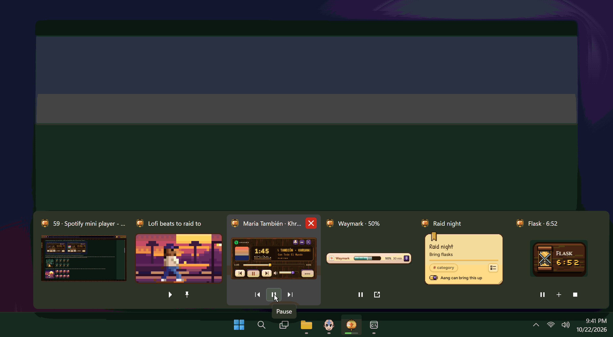
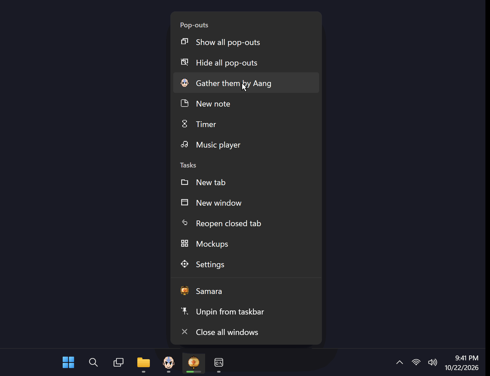
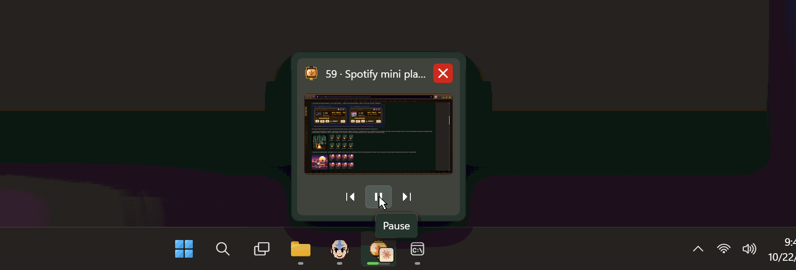
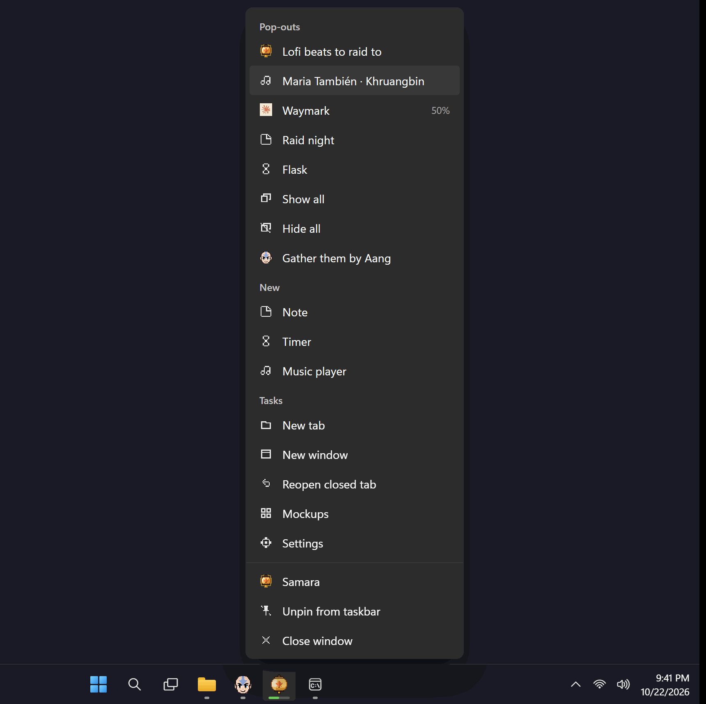

1HOVER THE LANTERN

Click a picture to bring that window up. The buttons work without opening anything. The green bar under the lantern is the Claude job (50%).
v1 · 22 Oct: one place on the taskbar for the music player, Claude jobs, notes, timers and the video
Your question: does each pop-out start a new Electron? No. They all live inside the one Samara/Aang program. But each one does get its own small helper behind the scenes, about 30 to 40 MB each (measured; the timer was 86). Five pop-outs open is roughly 150 to 250 MB of your 16 GB. Today only the video shows on the taskbar, so the others can't be reached from there. Here are two ways to put them all under Samara's lantern.
WHAT TO PICK A or B. I'd pick A.
Every pop-out joins Samara's button. Hover the lantern and you see each one as a little live picture, with its own buttons underneath: the music player's previous / pause / next, a Claude job's pause and open, a timer's pause / +1 min / stop. A running Claude job draws its green progress under the lantern. Right-click for a Pop-outs section.

Click a picture to bring that window up. The buttons work without opening anything. The green bar under the lantern is the Claude job (50%).

Show all / Hide all pop-outs at once. Gather them by Aang snaps them all together next to him. New note, Timer, Music player open one. Samara's five tasks stay below.
Pop-outs stay how they are now: not on the taskbar, not in Alt+Tab. Samara's own picture gets the music buttons, the lantern gets the job's green bar and Claude's little mark when a job needs you, and the right-click list names every open pop-out.

Only Samara's own window shows, carrying the music buttons. The small Claude mark on the lantern means a job wants you.

Each open pop-out by name; click one to bring it up. The names refresh when something changes, but they don't tick live (the timer shows no time here).